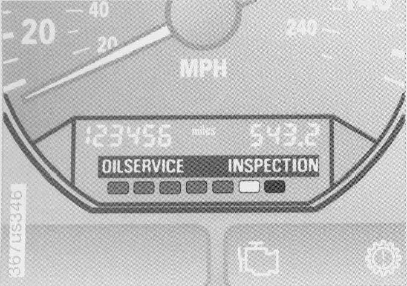

Service Interval Display

Service Interval Display:
Green Lamps:
- The number of illuminated lamps decreases as the time for your next maintenance visit approaches.
Yellow Lamp:
- This field appears together with OIL SERVICE or INSPECTION.
- This alerts you that maintenance is due. Please arrange for an appointment with your BMW center.
Red Lamp:
- Maintenance is overdue.
Advanced technology is employed to calculate the optimal maintenance intervals, which are then indicated in the Service Interval Display. While conventional systems rely solely on distance traveled to determine when service is due, the BMW Maintenance System considers the actual conditions under which the vehicle operates.
From the point of view of maintenance, 62,000 miles (100,000 km) accumulated in short-distance urban driving are not the equivalent of the same distance covered at moderate speeds in long- distance highway travel. In response to this fact, the BMW Maintenance System monitors operating conditions as the basis for determining the optimum service intervals for your individual vehicle. For this reason, the BMW Maintenance System monitors the actual operating conditions of the vehicle. It determines the optimal service intervals for the individual vehicle based on those conditions.
The BMW Maintenance System includes the Engine Oil Service as well as Inspections I and II.
Determining the maintenance intervals according to the actual loads on the car covers every kind of operating situation. However, even those who drive only short distances - significantly less than 6,200 miles (10,000 km) annually - should have the engine oil changed regularly since oil deteriorates over time, regardless of use.